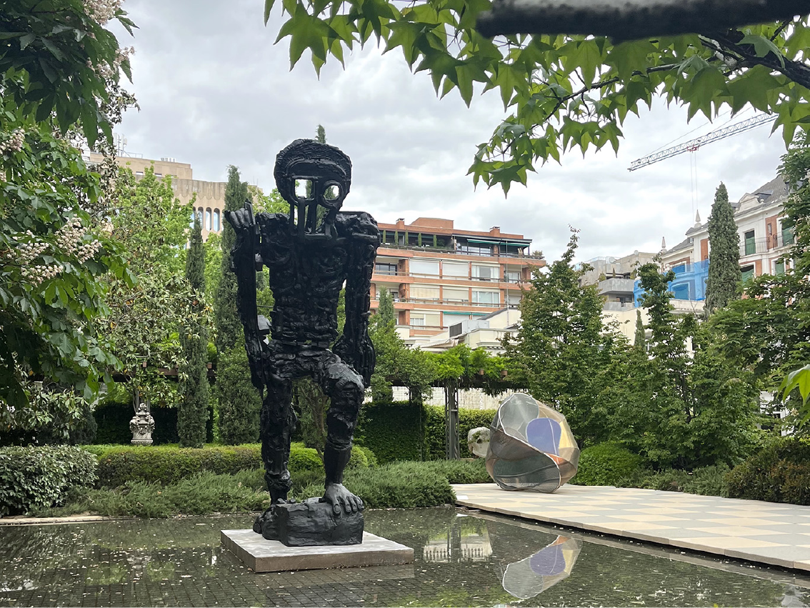
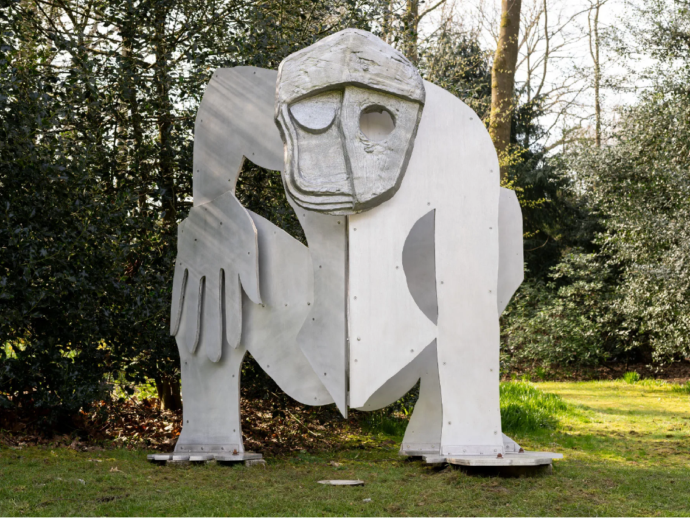
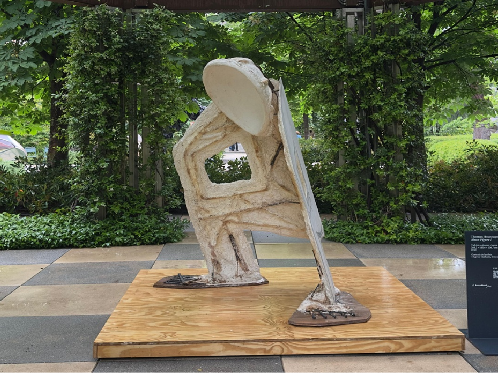
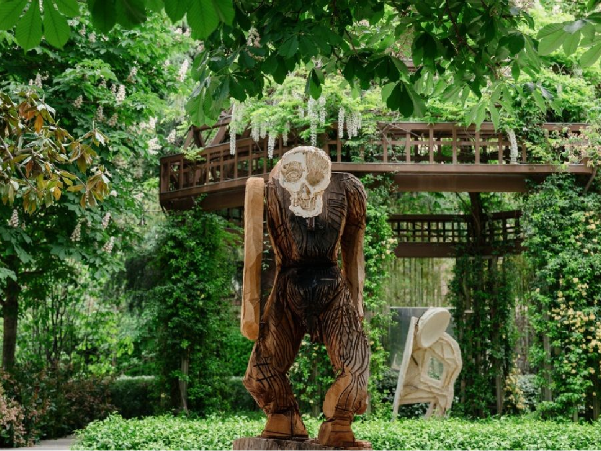

JARDÍN BANCA MARCH · MADRID
1 mayo - 31 octubre 2026
SOBRE LA EXPOSICIÓN
El jardín de Banca March acoge por primera vez en España la obra de Thomas Houseago, uno de los escultores más destacados del panorama contemporáneo. Siete esculturas de gran formato toman el espacio al aire libre de la sede madrileña, creando un recorrido donde la figura humana dialoga con la naturaleza, el tiempo y la historia del arte.
Una exposición que cruza referencias desde la escultura clásica hasta la cultura popular, y que sitúa Madrid en el centro del arte internacional.
Mayo - Octubre 2026 · Jardín Banca March, Madrid

OBRAS DESTACADAS



EL ARTISTA
Nacido en Leeds en 1972, Thomas Houseago es uno de los escultores contemporáneos más influyentes de su generación. Formado en la Central Saint Martins de Londres y en De Ateliers de Ámsterdam, vive y trabaja en Los Ángeles desde 2004.
Su obra construye un lenguaje propio que cruza siglos y referencias, desde la escultura clásica y Rodin hasta Brancusi, Giacometti o iconos de la cultura popular como Ziggy Stardust y Darth Vader, siempre con la figura humana como eje central.
Ha expuesto en instituciones como el Centre Pompidou-Metz, la Royal Academy de Londres o la Galleria Borghese de Roma. La exposición en el Jardín Banca March supone su primera muestra en España.
PLANIFICA TU VISITA
Viernes y Sábados · 12:00 - 19:00 h
Jueves · 19:00 - 23:00 h
Comprar entradas